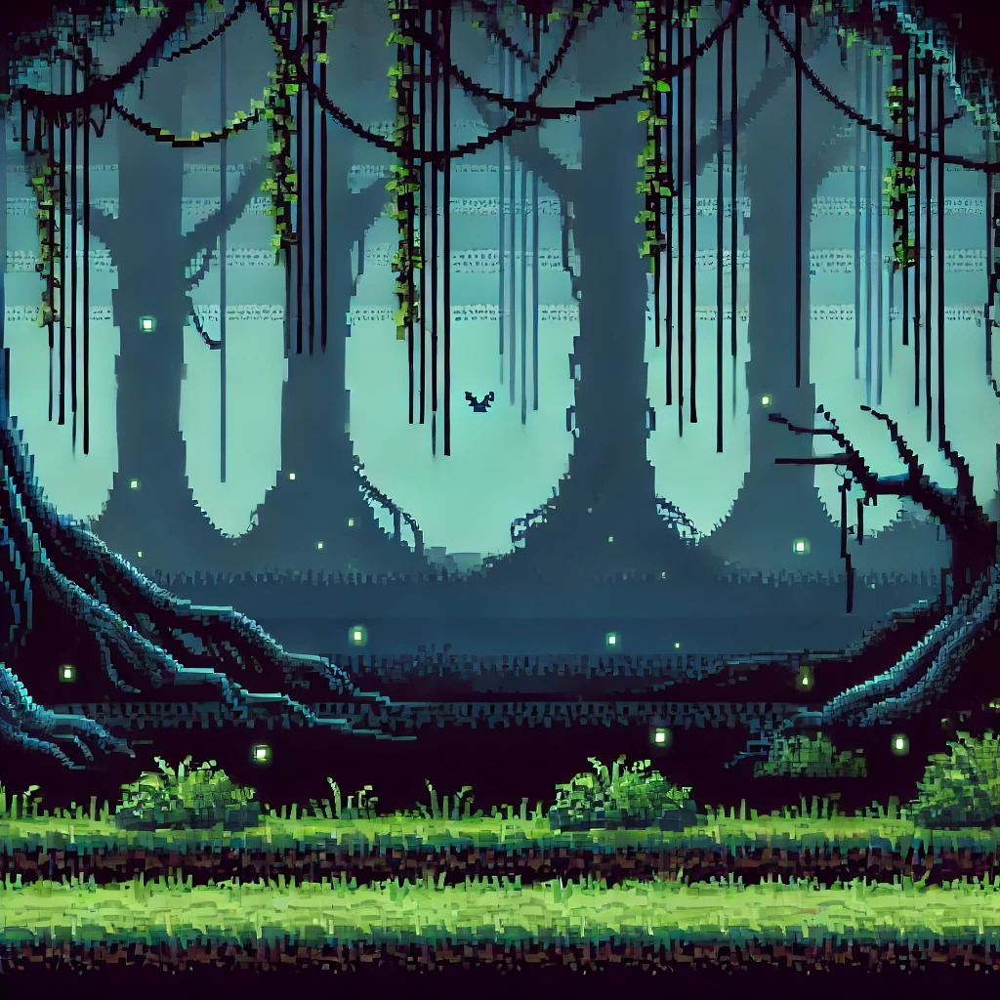
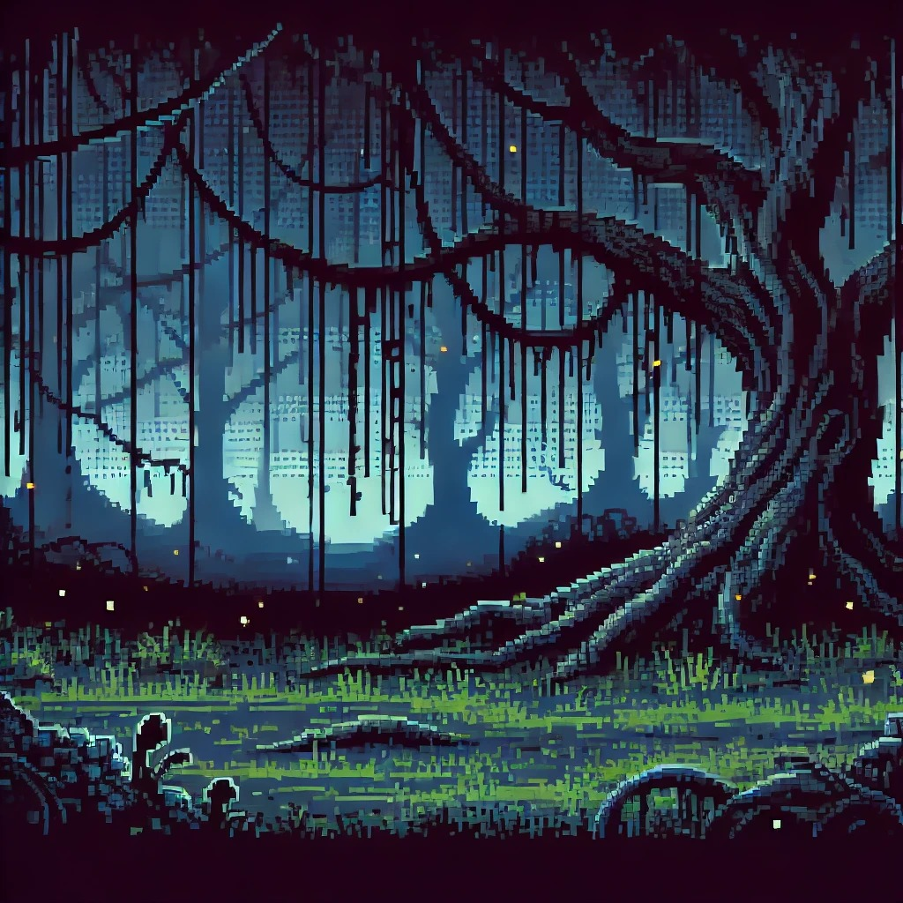
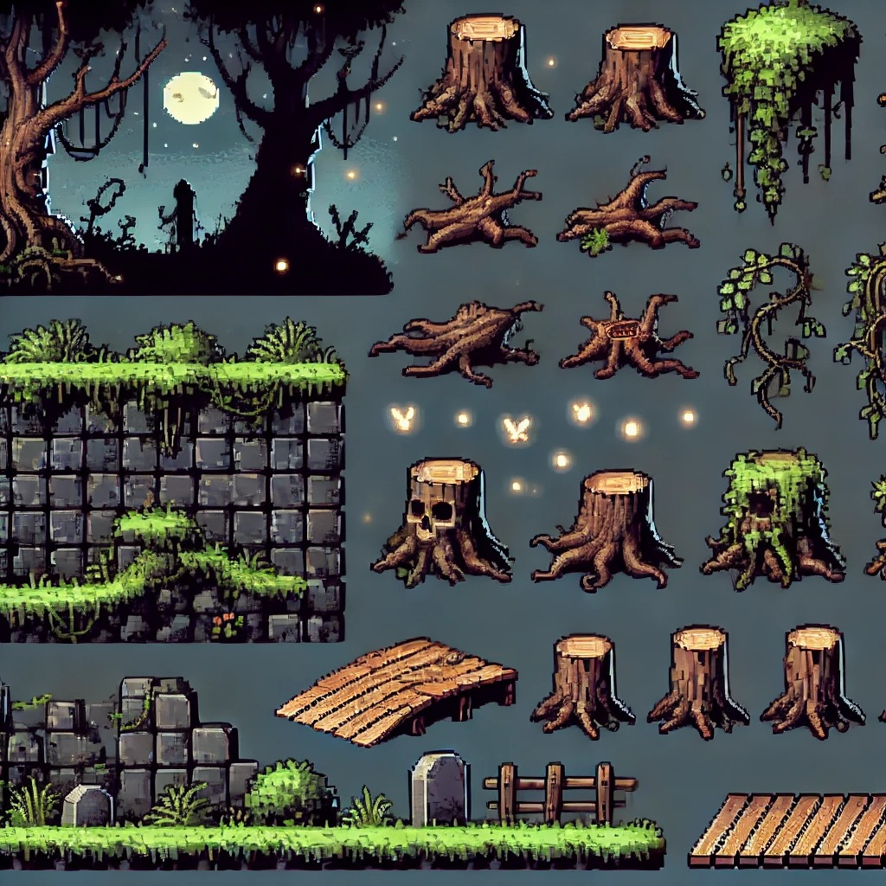
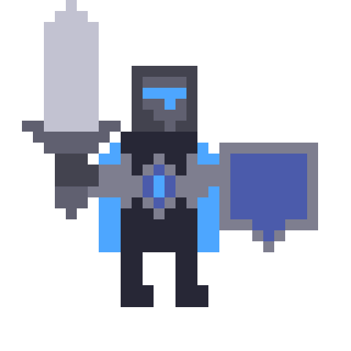
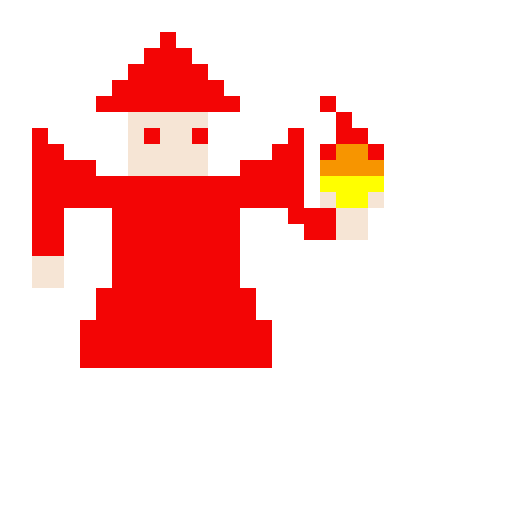
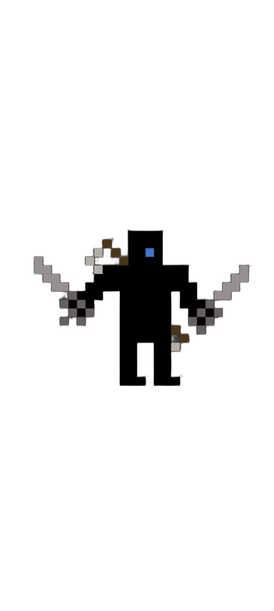
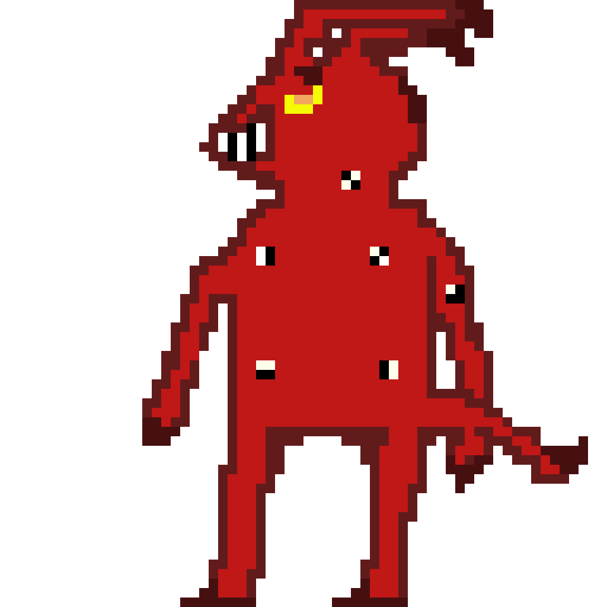
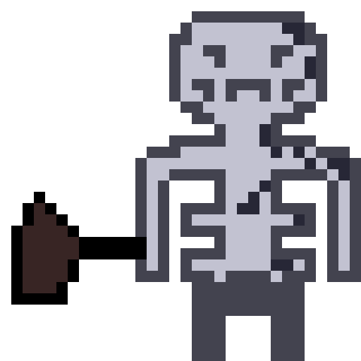
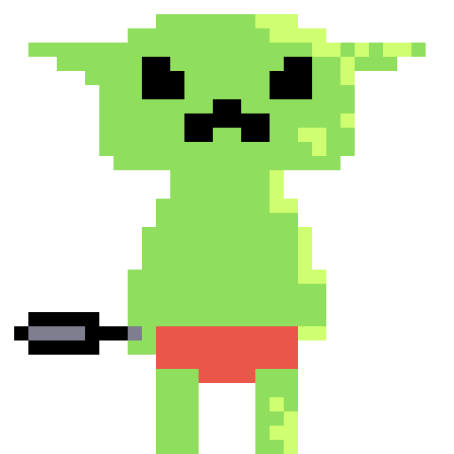

DICE WORLD
DiceWorld
Explore um mundo de fantasia vibrante, enfrente criaturas sombrias e colete os fragmentos do destino. A jornada para restaurar Altaris começou!
introducao
No coração do mágico reino de Altaris, onde o destino dançava em perfeita sintonia com os sagrados Dados da Harmonia, uma sombra nefasta se abateu. Dardarios, um ser corrompido por ambições sombrias, ousou roubar todos os Dados, mergulhando o reino em um caos sem precedentes. O futuro, antes certo e ordenado, agora se esvai em incerteza, e criaturas outrora pacíficas se curvam à influência maligna.
Em meio a essa desordem crescente, uma faísca de esperança surge. Convocado pelo Rei de Altaris, você assume o papel de um herói destemido - o leal Guerreiro, o estudioso Mago ou o astuto Ladino - cada um com habilidades únicas e uma motivação pessoal para enfrentar a escuridão.
Sua missão é clara: aventurar-se pelos perigosos cenários de Altaris, desde ruínas corrompidas até florestas sombrias, enfrentando os capangas de Dardarios e coletando os fragmentos dos Dados da Harmonia que ele deixou cair em sua fuga. A cada inimigo derrotado, sua força crescerá, preparando-o para o confronto final contra o próprio Dardarios.
O destino de Altaris repousa em seus ombros. Recupere os Dados perdidos, derrote Dardarios e restaure a harmonia em um mundo à beira do abismo. A jornada começou!
HISTÓRIA

GAMEPLAY
A aventura em Altaris coloca o jogador na pele de um dos três bravos heróis (Guerreiro, Mago ou Ladino), cada um com um estilo de jogo distinto e habilidades únicas essenciais para superar os desafios que aguardam. A jornada para recuperar os Dados da Harmonia perdidos por Dardarios se desenrola através de níveis desafiadores, que exigem tanto precisão nas plataformas quanto estratégia nos combates.
Exploração e Plataforma: Os cenários de Altaris são repletos de obstáculos criativos: plataformas móveis, abismos traiçoeiros, armadilhas escondidas e passagens secretas aguardam a exploração dos jogadores. A habilidade de cada personagem se integra ao design dos níveis, permitindo diferentes abordagens para superar os desafios. O Guerreiro pode usar seu Escudo para quebrar barreiras e alcançar áreas escondidas, o Mago pode usar a Translocação Arcana para alcançar plataformas distantes, e o Ladino pode usar sua Rapidez para realizar saltos duplos e escalar paredes.
Combate Dinâmico: Ao longo da jornada, os heróis encontrarão os capangas de Dardarios: Esqueletos implacáveis, Goblins ágeis com ataques corpo a corpo e Fantasmas etéreos que exigirão diferentes táticas de combate.
- O Guerreiro, com sua Espada e posturas, se destaca no combate direto, podendo escolher entre causar mais dano, focar na defesa ou priorizar a mobilidade dependendo da situação. Seu Escudo não só protege, mas também ataca e interage com o cenário.
- O Mago, com sua Explosão Elemental, pode adaptar seus ataques a diferentes tipos de inimigos, explorando fraquezas elementais. Sua habilidade de Detecção pode revelar segredos e vulnerabilidades dos inimigos, dando uma vantagem estratégica nos confrontos.
- O Ladino, com seu ataque furtivo Assassinar e a habilidade de se Esconder, pode eliminar inimigos silenciosamente ou causar dano massivo em emboscadas. Sua Rapidez o torna um combatente ágil, capaz de desviar de ataques e flanquear os inimigos.
Coleta dos Dados da Harmonia: Espalhados pelos níveis, estarão os fragmentos dos Dados da Harmonia que caíram durante a fuga de Dardarios. Coletar esses fragmentos não é apenas um objetivo secundário, mas também pode desbloquear segredos, bônus ou até mesmo influenciar o final do jogo. A busca por cada fragmento incentivará a exploração minuciosa de cada canto dos cenários
Progressão Simplificada: Ao derrotar os capangas de Dardarios, os jogadores acumularão pontos de experiência (XP). Essa experiência se traduzirá em melhorias automáticas nos atributos de cada personagem, de acordo com sua classe. O Guerreiro naturalmente se tornará mais resistente e forte, o Mago terá seu poder arcano amplificado, e o Ladino se tornará mais ágil e letal, sem a necessidade de menus complexos ou escolhas de habilidades por parte do jogador. Isso mantém o foco na ação e na exploração.
Encontro com os Capangas: Os jogadores encontrarão os capangas de Dardarios em momentos estratégicos dos níveis, funcionando como mini-desafios que testarão as habilidades de combate e a adaptação a diferentes estilos de inimigos. Cada tipo de capanga exigirá uma abordagem tática diferente, incentivando o uso inteligente das habilidades de cada personagem.
Confronto Final com Dardarios: A culminação da jornada será o épico confronto com o próprio Dardarios no último nível. Essa batalha será um teste de tudo que o jogador aprendeu ao longo da aventura, exigindo o uso estratégico das habilidades do personagem escolhido, a exploração das mecânicas de plataforma e a memorização dos padrões de ataque do vilão. Dardarios será um chefe com múltiplas fases e ataques desafiadores, tornando a vitória uma conquista memorável.
objetivo
O objetivo principal do jogo é guiar o herói escolhido através dos perigosos domínios de Altaris para recuperar todos os Dados da Harmonia roubados por Dardarios e, finalmente, derrotá-lo em um confronto épico para restaurar o equilíbrio e a ordem no reino.
Para alcançar esse objetivo principal, o jogador deverá:
- Atravesar níveis desafiadores: Superar obstáculos de plataforma criativos, desviar de armadilhas e explorar cada canto em busca dos fragmentos dos Dados da Harmonia.
- Combater os capangas de Dardarios: Enfrentar e derrotar os diversos lacaios do vilão (Esqueleto, Goblin e Fantasma) utilizando as habilidades únicas do seu personagem e aprendendo suas táticas de combate.
- Coletar os Dados da Harmonia: Encontrar todos os fragmentos dos Dados espalhados pelos níveis, desvendando segredos e possivelmente desbloqueando bônus ou informações importantes para a jornada.
- Aprimorar seu herói: Acumular experiência ao derrotar inimigos para fortalecer automaticamente os atributos do personagem escolhido, tornando-o mais capaz de enfrentar os desafios futuros.
- Vencer o confronto final: Encarar Dardarios em uma batalha climática no último nível, utilizando todas as habilidades e estratégias aprendidas ao longo da aventura para derrotá-lo e salvar Altaris do caos.
universo
O mundo de Altaris é um reino de fantasia vibrante e outrora harmonioso, onde o destino e a ordem eram intrinsecamente ligados aos Dados da Harmonia. Estes não eram meros objetos, mas sim artefatos sagrados imbuídos de poder cósmico, capazes de tecer o próprio tecido do futuro. Sua presença garantia a estabilidade do reino, influenciando desde as colheitas até a paz entre as criaturas.
A arquitetura de Altaris reflete uma era de prosperidade e magia, com cidades adornadas por estruturas elegantes, templos dedicados à Harmonia e paisagens naturais exuberantes, pontuadas por ruínas antigas que sussurram histórias de eras passadas. Florestas místicas com flora e fauna peculiares, montanhas imponentes que desafiam os céus e vales serenos banhados por rios cristalinos compõem a diversidade geográfica do reino.
No entanto, essa era de paz chegou a um abrupto fim com a traição de Dardarios, um ser maligno com ambições obscuras. Ao roubar todos os Dados da Harmonia, ele mergulhou Altaris em um caos crescente. O futuro se tornou incerto, leis naturais foram distorcidas, e criaturas antes pacíficas se tornaram agressivas e perigosas. A magia que antes fluía de maneira ordenada agora se manifesta de forma instável e imprevisível.
Em meio a esse cenário de desordem, surgem os capangas de Dardarios, criaturas corrompidas ou subjugadas pela sua influência nefasta. Esqueletos animados por magia sombria patrulham ruínas e caminhos abandonados. Goblins astutos e violentos emboscam viajantes desavisados em florestas e cavernas. Fantasmas etéreos assombram áreas outrora sagradas, espalhando terror e confusão.
A esperança reside em um dos heróis escolhidos pelo Rei de Altaris: o Guerreiro, um ex-soldado leal que busca redimir-se e restaurar a ordem; o Mago, um estudioso excêntrico que vê no caos uma perturbação perigosa ao equilíbrio arcano; e o Ladino, um mercenário ambicioso que, por motivos próprios, se vê envolvido na busca pelos Dados perdidos.
Cada herói explora diferentes regiões de Altaris afetadas de maneiras únicas pelo roubo dos Dados. Ruínas de templos onde a influência da Harmonia ainda pode ser sentida, florestas corrompidas pela magia caótica de Dardarios, e fortalezas sombrias onde seus capangas se estabeleceram são alguns dos cenários que compõem a jornada.
A atmosfera geral do universo é de urgência e perigo, mas também de esperança resiliente. Apesar do caos, a beleza natural de Altaris ainda persiste em alguns lugares, e a determinação dos heróis em restaurar a ordem acende uma chama de otimismo em meio à escuridão. A jornada para recuperar os Dados não é apenas uma luta contra Dardarios e seus lacaios, mas também uma busca pela restauração da própria essência de Altaris.
  HEROIS
O Guerreiro: Kaelen, o Escudo Leal
Kaelen serviu o Rei Alaric por anos, sua lealdade inabalável como o aço de sua espada. Ele testemunhou a era de ouro de Altaris, a prosperidade que os Dados da Harmonia traziam, a paz mantida pela ordem que eles emanavam. O roubo dos Dados por Dardarios o atingiu como um golpe pessoal. Não apenas o reino que jurou proteger foi mergulhado no caos, mas a própria estrutura da sociedade começou a ruir. A maldição que se espalhou com a ausência dos Dados tocou seu lar, levando a doença a entes queridos e transformando seus antigos companheiros de armas em sombras atormentadas.
O sentimento de falha o assombra. Kaelen se culpa por não ter previsto ou impedido a tragédia. Agora, empunha sua espada e seu escudo não apenas por dever ao Rei, mas por uma necessidade visceral de restaurar a ordem que foi quebrada. A busca pelos Dados é sua jornada de redenção, uma chance de honrar a memória dos tempos de paz e de proteger o que restou de seu mundo. Ele luta com a ferocidade de quem perdeu muito e com a esperança de que, ao recuperar os Dados, poderá dissipar a maldição que assola Altaris e trazer de volta a luz que se apagou.
Guerreiro
O Mago: Elara, a Teórica Arcana
Elara sempre preferiu o silêncio de sua torre aos salões da corte. Fascinada pelos mistérios do Arcano, ela dedicou sua vida ao estudo das energias que permeiam Altaris, observando como os Dados da Harmonia influenciavam o fluxo mágico e a própria natureza das criaturas. Para ela, o roubo dos Dados não foi apenas um ato de maldade, mas uma catástrofe cósmica, uma ruptura no delicado equilíbrio que sustentava a realidade.
O caos subsequente provou suas teorias de maneiras perigosas. A magia se tornou instável, seus experimentos antes controlados agora eram imprevisíveis e arriscados. Pior ainda, a perturbação no fluxo arcano intensificou a atividade dos monstros, tornando-os mais agressivos e revelando aberrações nunca antes vistas. A busca de Elara por aprimorar seus feitiços através do estudo dessas criaturas agora se tornou uma corrida contra o tempo, uma necessidade de compreender e conter a crescente ameaça.
Embora sua motivação possa parecer puramente intelectual, Elara sente uma profunda conexão com a Harmonia dos Dados. Talvez em seus estudos tenha vislumbrado seu verdadeiro poder, ou talvez sinta intuitivamente que sua ausência ameaça o próprio tecido da magia que ela tanto ama. Sua jornada não é apenas para recuperar artefatos perdidos, mas para restaurar a ordem fundamental do universo, para que o Arcano possa fluir livremente novamente e seus estudos possam continuar em segurança. Há quem diga que ela previu o roubo em sonhos fragmentados, e agora busca respostas nos fragmentos dos Dados.
mago
O Ladino: Zephyr, a Sombra Oportunista
Zephyr sempre navegou pelas sombras de Altaris, sua lealdade a ninguém além de sua própria bolsa de moedas. O reino próspero era um terreno fértil para seus "empreendimentos", e ele prosperava na penumbra da sociedade. Inicialmente, o caos causado pelo roubo dos Dados pareceu uma bênção disfarçada. Portas antes trancadas se abriram, tesouros mal guardados surgiram em meio à confusão, e a desordem geral oferecia inúmeras oportunidades para um ladrão astuto.
No entanto, a anarquia rapidamente se provou um jogo perigoso. A competição entre os que buscavam lucrar com a desgraça se intensificou, os alvos se tornaram mais perigosos, e a instabilidade crescente ameaçava até mesmo seus negócios mais lucrativos. Os monstros, antes confinados a áreas selvagens, agora vagavam livremente, tornando cada roubo uma provação mortal.
Embora a ganância ainda o motive, Zephyr começa a perceber que o caos extremo não é bom para os negócios a longo prazo. A promessa de "recompensas duvidosas" em meio ao pandemônio se torna menos atraente quando confrontada com perigos reais e a possibilidade de perder tudo. Talvez ele tenha testemunhado algo crucial durante o roubo dos Dados, uma informação valiosa que poderia render uma recompensa substancial do Rei. Ou talvez, no fundo, ele perceba que a restauração da ordem, por mais que vá contra sua natureza, seja a única maneira de estabilizar o "mercado" de oportunidades. Sua jornada pode ter começado com a busca por lucro, mas à medida que ele coleta os fragmentos dos Dados, uma nova motivação pode surgir: a de garantir sua própria sobrevivência em um mundo que se desfaz.
Ladino
inimigos
Dardarios
Dardarios não surgiu das sombras como um monstro óbvio. Em tempos passados, ele era conhecido como um erudito, um Arquivista dos Dados da Harmonia. Ele dedicou sua vida ao estudo dos intrincados padrões que governavam o destino de Altaris, compreendendo como cada "rolagem" cósmica influenciava o reino. No entanto, essa imersão profunda no tecido do futuro o levou a uma conclusão sombria: ele não era o mestre do seu próprio destino, nem Altaris era verdadeiramente livre enquanto estivesse preso às previsões dos Dados.
Sua mente brilhante se retorceu em ressentimento. Ele começou a ver a Harmonia não como uma bênção, mas como uma gaiola dourada, aprisionando o potencial do reino em um ciclo previsível. Uma sede de liberdade absoluta, mesmo que através da destruição, começou a consumi-lo. Ele acreditava que para Altaris realmente prosperar, para que cada indivíduo forjasse seu próprio caminho, era necessário quebrar as correntes do destino.
O roubo dos Dados não foi um ato impulsivo, mas a culminação de anos de estudo e planejamento meticuloso. Dardarios conhecia os segredos dos artefatos, suas vulnerabilidades e os rituais necessários para despojá-los de seu poder. Sua fuga de Altaris não foi apenas para escapar da retaliação, mas para espalhar a semente do caos, provando ao reino a fragilidade de sua dependência da Harmonia.
Os capangas que servem a Dardarios não são meramente lacaios aleatórios. Os Esqueletos podem ser antigos guardiões dos Dados, reanimados e corrompidos pela sua agia profana. Os Goblins, talvez marginalizados pela antiga ordem, veem no caos uma oportunidade de ascender. Os Fantasmas podem ser espíritos aprisionados pelos próprios Dados, libertados e distorcidos pela sua ausência, jurando lealdade àquele que quebrou suas correntes.
O objetivo final de Dardarios vai além da simples destruição. Ele busca remodelar Altaris à sua imagem, um reino onde o acaso e a vontade individual reinem supremos, livre das amarras do destino predeterminado. Ele se vê como um libertador, mesmo que seus métodos causem sofrimento e anarquia.
No confronto final, Dardarios não será apenas um inimigo com ataques poderosos. Ele personificará a própria instabilidade do caos, com habilidades que manipulam a realidade de maneiras imprevisíveis, testando a capacidade dos heróis de se adaptarem ao inesperado. Sua derrota não será apenas física, mas simbólica: a reafirmação de que a ordem e a esperança podem florescer mesmo após a mais profunda perturbação
Dardarios
Esqueleto
goblin
fantasma

controles
A interação do jogador com o mundo de Altaris será feita através de controles intuitivos e diretos no teclado e mouse:
Movimento:
Teclas WASD: As teclas W (para cima, utilizado principalmente para interações verticais limitadas ou em menus), A (para a esquerda), S (para baixo, podendo ser usado para agachar ou outras ações contextuais) e D (para a direita) serão responsáveis pela movimentação do personagem no plano horizontal.
Pulo:
Tecla ESPAÇO: A tecla ESPAÇO será dedicada ao comando de pulo, essencial para a navegação nas plataformas e para desviar de ataques inimigos. A altura e a distância do pulo podem variar dependendo do personagem e de possíveis melhorias ao longo do jogo.
Ataque:
Botão Esquerdo do Mouse: O botão esquerdo do mouse será utilizado para realizar o ataque principal do personagem. A direção do ataque será geralmente para a qual o personagem está virado
camera
A câmera do jogo adotará uma perspectiva 2D com acompanhamento suave do personagem. Isso significa que o ponto de vista principal seguirá os movimentos do jogador horizontalmente e, possivelmente, verticalmente dentro de certos limites da tela. O objetivo é manter o personagem sempre no foco da ação, proporcionando uma visão clara dos arredores imediatos, plataformas à frente e inimigos próximos.
Foco no Personagem: O personagem controlado pelo jogador permanecerá centralizado na tela na maior parte do tempo, ou dentro de uma área predefinida do campo de visão. Isso garante que o jogador tenha sempre uma referência visual clara da posição e dos movimentos do seu herói.
Movimento Fluido: O acompanhamento da câmera será suave e responsivo aos movimentos do jogador, evitando "solavancos" ou atrasos que possam causar desorientação.
Antecipação Limitada: A câmera pode oferecer uma pequena antecipação na direção do movimento do jogador, permitindo que ele veja um pouco mais do que está imediatamente à frente, preparando-o para possíveis obstáculos ou inimigos. No entanto, o foco principal permanecerá no personagem para garantir a precisão nas plataformas e combates.
Limites Visuais: Cada nível terá seus próprios limites visuais definidos pela câmera. O jogador não poderá ver áreas muito distantes fora do escopo do nível, mantendo o foco na área de jogo atual.
Possíveis Ajustes: Em momentos específicos, como em combates contra chefes maiores ou em áreas com designs verticais mais acentuados, a câmera pode se ajustar ligeiramente para enquadrar melhor a ação ou o cenário, mas sempre mantendo o personagem como ponto de referência principal.